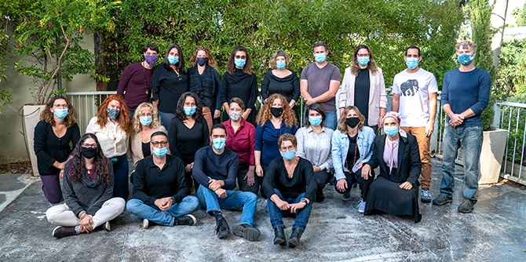

מפגשי הפתיחה הוקדשו להיכרות של העמיתים החדשים עם תפיסות מרכז מנדל למנהיגות בצפון, עם הצוות ועם הקבוצה.
תוכנית מנדל למנהיגות חברתית נפתחה בסוף אוקטובר במדשאה בקיבוץ שער העמקים. היום הראשון של התוכנית נפתח בחוויה מוזיקלית, עם להקת ההיפ-הופ האקטיביסטית "סיסטם עאלי" שחיברה בין העמיתים באמצעות שירים הכתובים בשש השפות שדוברים חברי הלהקה. העמיתים נפגשו גם עם מנהל המרכז מיקי נבו להרצאת מבוא בנושא יזמות חברתית. ביום השני פגשו העמיתים חלק מהמרצים שילמדו במהלך השנה – לטעימות מתוכן הלימוד, שיח בנושא פוליטיקה עכשווית, בניית תשתית ידע ואלטרנטיבות לפתרונות מדיניות, ומפגש השראה בנושאי רוח.

תוכנית מנדל למנהיגות בשירות הציבורי נפתחה בנובמבר. במפגש הפתיחה שנערך בקיבוץ הזורע דנו העמיתים, סביב שולחנות עגולים, ביצירת חוזה קבוצתי על דרכי השיח והאווירה. אחר כך נפגשו העמיתים עם אמי פלמור, מנכ"לית משרד המשפטים לשעבר, ששיתפה בחוויות רבות מכהונתה. מיקי נבו, מנהל המרכז, נשא הרצאת מבוא בנושא ניהול ומנהיגות, ולבסוף האזינו העמיתים למרים טוקאן – זמרת, עורכת דין ופעילה פוליטית ששרה בעברית, בערבית ובאנגלית.

עמיתי תוכנית מנדל למנהיגות אזורית בצפון התכנסו באוקטובר למפגש פתיחה מקוון שהתקיים ב"זום". בפתיחת היום האזינו העמיתים להרצאה של פרופ' מוטי גולני – היסטוריון, ראש המכון לחקר הציונות וישראל באוניברסיטת תל אביב וחבר סגל בית ספר מנדל למנהיגות חינוכית. גולני הרצה על "העבר - האם מה שהיה אכן היה? על 'חומה ומגדל', על ניר דוד ועלינו". לאחר מכן התפצלו העמיתים לשלושה "חדרי עבודה" בזום. בכל חדר פגשו אחת מן המנטוריות מהתוכנית, ושוחחו עמה על שאלה אחת הקשורה בתיאום ציפיות לתחילת הדרך בתוכנית. לאחר איסוף הדברים שנאמרו בחדרים השונים התכנסו העמיתים במליאה להצגת התובנות ולדיון. לבסוף צפו בשירם של מרים טוקאן ועידן טולדנו "כשביאליק פגש את פיירוז".

{kind=link}